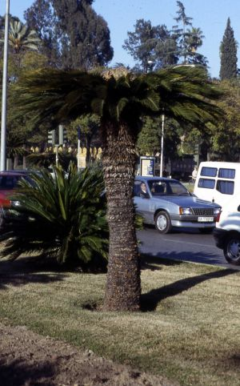
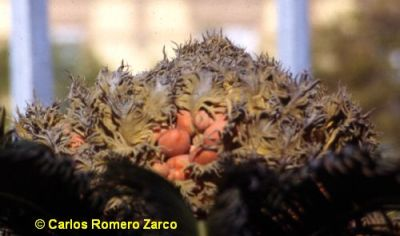

 Ejemplar hembra de Cycas revoluta en La Pasarela (Sevilla) Foto: © Carlos Romero Zarco |
A menudo se describen
como "falsas
palmeras", sin embargo hemos de admitir que las plantas a las que
denominamos "palmeras verdaderas" son mucho más recientes, ya
que aparecieron durante el
Cretácico, hace "sólo" unos 120 millones de años
como máximo.
Fueron los helechos
del Carbonífero, mucho más antiguos que ambos grupos, los
que
"inventaron" el diseño de tipo "palmera", con un tronco grueso y
simple, en forma de columna, en cuyo ápice crece un único
penacho de
grandes hojas. Las plantas con diseño de tipo palmera forman el
grosor
de su tronco de una sola vez, y crecen sólo en altura,
produciendo
nuevas hojas a medida que las viejas van cayendo.  Cono femenino o "piña" con semillas en formación |
| La reproducción se realiza mediante semillas desnudas, es decir, que no están protegidas dentro de un ovario y, por consiguiente no forman fruto. Son dióicas (hay plantas macho y plantas hembra) y las hojas fértiles se reúnen en piñas de gran tamaño. Las piñas masculinas están formadas por numerosas escamas productoras de sacos polínicos, y se parecen externamente a las piñas de las Coníferas. Las femeninas suelen ser cónicas y de gran tamaño, ocupando a menudo el ápice de crecimiento de la planta, y están formadas por hojas reducidas y tomentosas en cuya base crecen varios primordios seminales (óvulos de las plantas). | |
|
Este es un documento de información adicional a la ficha de Cycas revoluta de la serie:
"Flora Ornamental del Campus de Reina Mercedes", dentro de la
asignatura "Botánica de Campus" © Carlos Romero Zarco, Universidad de Sevilla, 7 de Octubre de 2005 |
|